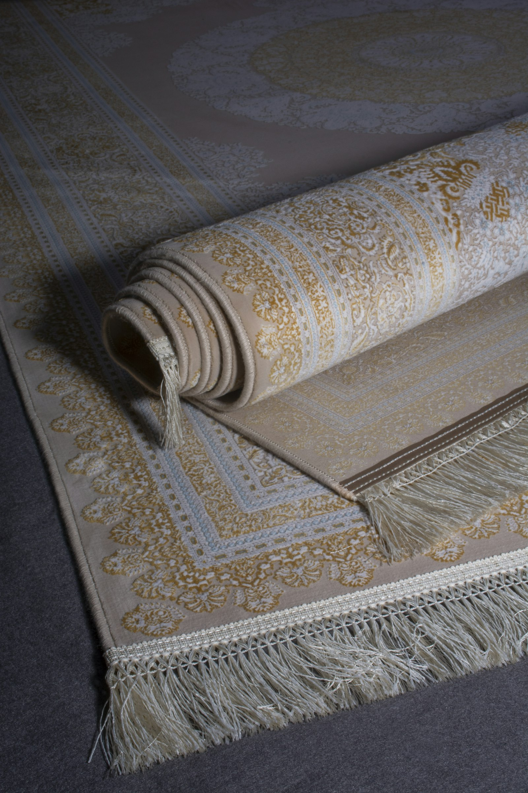
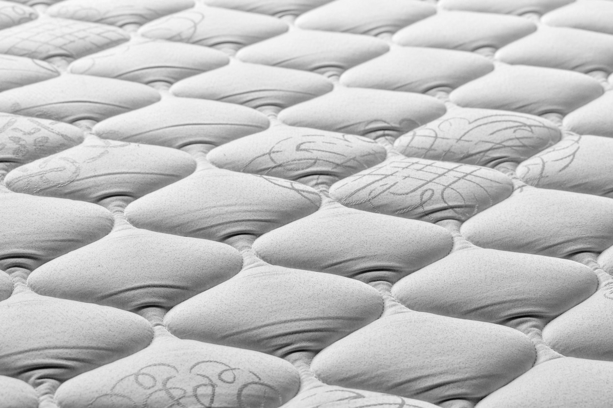
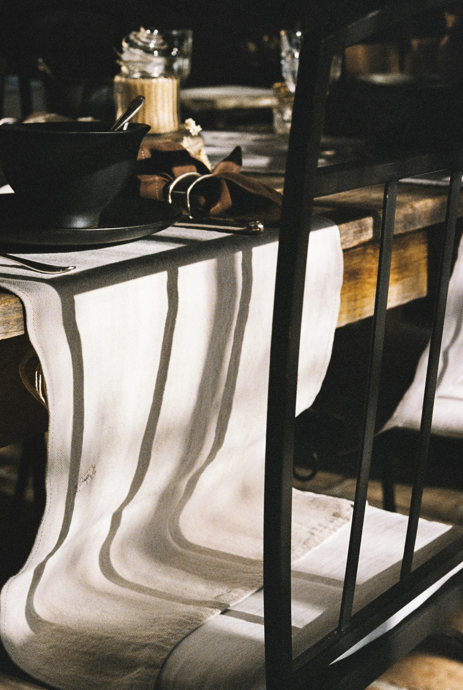

Eight chapters, one house
Everything soft
a room can wear.
Forty-two years of shortlisting — fabric by fabric, bed by bed, wall by wall — has given us a small, considered range. Nothing here is on the floor for the sake of stock. If we keep it, we've already backed it. If we don't, we tell you where to find it — even if that's someone else's floor.

For light, sleep, and everything you'd rather not hear.
The right curtain solves three problems at once: the light that keeps you up, the balcony that watches your Sunday afternoon, and the room that felt unfinished until you hung something at its window. Twenty-two sheer weights, three-pass blackouts for the ones who like their weekends dark, jacquards woven for us in Erode. Tailored by us, hung by us, altered by us if the drop's a finger off.
- Sheers — voile, organza, leno
- Blackouts — three-pass, motorised
- Jacquards — Erode, Salem looms
- Printed cotton — Bhuj & Bagh
- Tracks & rods — brass, walnut
- Hand-stitched headings

The floor becomes the room.
A carpet is the layer that finally makes a room feel like one — softer underfoot in winter, quieter to walk through at midnight, kinder to a toddler about to fall. Hand-knotted wool from Bhadohi for the rooms that ought to last twenty years, flat-woven dhurries from Mirzapur for the corridors that see daily traffic, and honest machine-mades when the budget calls for one. Knot-count on every label — no inflated numbers, no imported fiction.
- Hand-knotted wool
- Tibetan-knot silk
- Flat-weave dhurries
- Machine-mades — Belgium, Turkey
- Runners & staircases
- Cleaning & underlay service

The eight hours your back is asking for.
You will spend a third of the next decade on this mattress. It is worth twenty minutes of choosing. Eleven beds on the floor, laid out to try — please lie down on three, don't apologise for taking your time, and don't leave without knowing which one your shoulders prefer. Authorised for Sleepwell, Kurlon, Duroflex — meaning your warranty runs through us, not to a call centre.
- Pocket-spring
- Memory foam
- Natural latex
- Bonded coir
- Orthopaedic firmness
- Custom sizes & protectors

Windows that need their light on a dial.
Some rooms need light on a dial — half of it at three o'clock, none of it at bedtime, all of it on Sunday morning. That is what blinds do that curtains cannot. Roman in cotton for the reading corner, roller blackouts for the bedroom, wooden venetians where the study wants something firm. Motorised — and, more importantly, quiet — installed by our own electrician, warranty through us.
- Roman blinds
- Roller — blackout, solar
- Vertical PVC
- Wooden venetian
- Honeycomb / cellular
- Motorised & remote

One wall. A different room.
Change one wall, and the whole room reads new. It is the smallest civil work you can do to a house, and the one that returns the most. Asian Paints Nilaya and Marshalls on the floor, imported prints from Italy and Germany by special order — hung by Naresh, who has been hanging paper for us since 2003. Bubble-free. If not, we hang it again, no argument.
- Asian Paints Nilaya
- Marshalls — India & UK
- Imported — Italy, Germany
- Textured & embossed
- Kids' room ranges
- Free site survey & install

The sofa you own can outlast the one you were about to buy.
We collect it in a truck, strip it down, replace the springs if they've gone, restuff the cushions, re-cover it in a fabric you actually chose, and deliver it home in ten days — better than you remember it. New pieces too — chenille, jacquard, linen, leatherette, indoor-outdoor performance. Sold by the metre, upholstered by the room.
- Chenille & jacquard
- Pure & blended linen
- Performance / pet-friendly
- Leatherette & vinyls
- Sofa re-upholstery
- Foam & spring refits

Cotton you can sleep ten years in.
Ten degrees of comfort separate a good night from a bad one, and most of them live in the weave. Pure-cotton sateen and percale in 250 to 600 thread counts, quilts and dohars in winter weights, pillow forms we re-fill on request. We do not sell polyester sheets. We never have.
- Sateen — 300 to 600
- Percale & oxford
- Quilts & dohars
- Pillow forms — duck, microfibre
- Custom sizes for old beds
- Embroidered bridal sets

Every meal, a small ceremony.
A runner turns supper into an occasion, and a set of napkins turns your dining table into someone else's memory. Jacquard, plain weave, runners, place-mats, napkins, tea-towels — woven for us, gift-wrapped at the counter without being asked, and as good a wedding present as any we know of.
- Jacquard runners
- Place-mats — cotton, jute
- Napkins — 12-piece sets
- Tea-towels & aprons
- Festive collections
- Complimentary gift wrap
Or, the easiest way
Come see it on the floor.
Two minutes from Ameerpet Metro. Tea is on. Bring your room measurements, or don't — we'll come measure them for you.